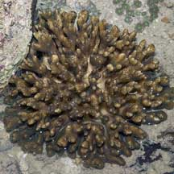
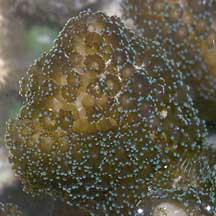

|
|
| hard corals text index | photo index |
| Phylum Cnidaria > Class Anthozoa > Subclass Zoantharia/Hexacorallia > Order Scleractinia |
| Pocilloporid
corals Family Pocilloporidae updated Nov 2019 Where seen? The Cauliflower coral (Pocillopora sp.) is commonly seen on many of our Southern reefs. Members of the Family Pocilloporidae are considered the second-largest contributors to reef formations although they have relatively few species. They are most active and found in greatest numbers in shallow waters with strong waves. They reproduce easily by fragmentation, the fragments surviving stress well in nature. Seriatopora sp. Colonies form compact bush-like shapes (arborescent), many have thin branches with pointed tips. Often the branches intertwine and fuse to form a cage-like skeleton. This genus is distinguished by the neat rows of corallites on the branches. Stylophora sp. Colonies may be branched, with thick branches that may be rounded or flattened; or form lumpy shapes (sub-massive). The corallites are embedded in the skeleton and may be hooded with small conical spines called spinules. The polyps are small. These corals are fast growing and adapt well to a wide range of conditions. Living with pocilloporids: Some shrimps and crabs live with Pocillopora corals. While most just shelter among the corals, some of these eat the polyps. Some crabs live only with Seriatopora corals. In one species of crab, the female intentionally traps herself inside a cage of living coral branches and waits for the small male crab to find and mate with her. Some damselfishes shelter in Stylophora corals. In turn, it is believed the coral benefits from the waste materials of the fish as corals with these fishes have been found to grow much faster. Human Uses: Many pocilloporid species are harvested for sale as souvenirs. Being tough, Pocillopora coral are often kept in captivity and used in laboratory conditions. They are sometimes called the coral guinea pigs. They are among the best studied corals. Status and threats: Some members of the Family Pocilloporidae recorded for Singapore are listed as globally Near Threatened by the IUCN. Like other creatures of the intertidal zone, they are affected by human activities such as reclamation and pollution. Trampling by careless visitors, and over-collection also have an impact on local populations. |
 Labrador, Jun 05 |
 |
| Family
Pocilloporidae recorded for Singapore from Danwei Huang, Karenne P. P. Tun, L. M Chou and Peter A. Todd. 30 Dec 2009. An inventory of zooxanthellate sclerectinian corals in Singapore including 33 new records **the species found on many shores in Danwei's paper. in red are those listed as threatened on the IUCN global list.
|
|
Links
References
|